Comptes et accès par rôle
| Rôle | Identifiant | Mot de passe | Accès principal | Restrictions |
|---|---|---|---|---|
| 👩💼 Secrétaire | secretaire@nephro.test |
Nephro2024! |
Patients, RDV, Absences, Liste d'attente | Pas de prescriptions ni de bilans |
| 👨⚕️ Médecin | medecin@nephro.test |
Nephro2024! |
Dossiers complets, Prescriptions, Dashboard, Bilans | Pas de facturation |
| 💊 Infirmière | infirmiere@nephro.test |
Nephro2024! |
Interface Infirmier (action-588), Séances assignées | Pas de prescriptions, pas de facturation |
| 💰 Facturation | facturation@nephro.test |
Nephro2024! |
App Facturation Dialyse, Rapports | Lecture seule sur les dossiers médicaux |
| 👤 Patient | patient@example.com |
(envoyé par email) |
Portail /my (séances, bilans, ordonnances, factures) | Ses données uniquement, lecture seule |
| ⚙️ Admin | admin@nephro.test |
Nephro2024! |
Accès complet à tous les modules | Aucune restriction |
Cycle 1 — Accueil & Inscription du Patient
Connexion à Odoo
La secrétaire (ou l'administrateur) ouvre le navigateur et se connecte à l'interface HMS Néphro. Après authentification, elle atterrit sur le tableau de bord Odoo général.
- 1Ouvrir
http://localhost:8069/web/logindans le navigateur - 2Saisir l'email
admin@nephro.test(ousecretaire@nephro.test) et le mot de passe - 3Cliquer sur Se connecter — le tableau de bord Odoo s'affiche
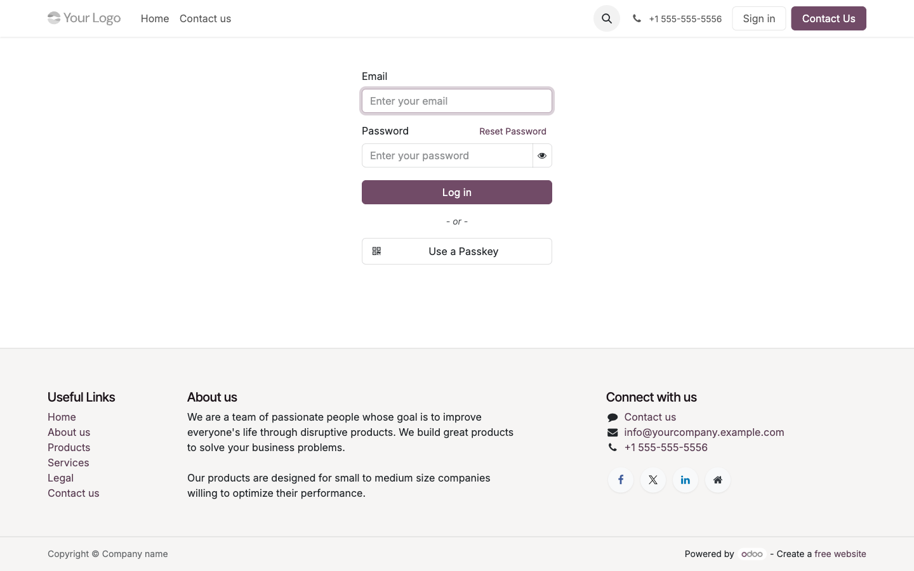
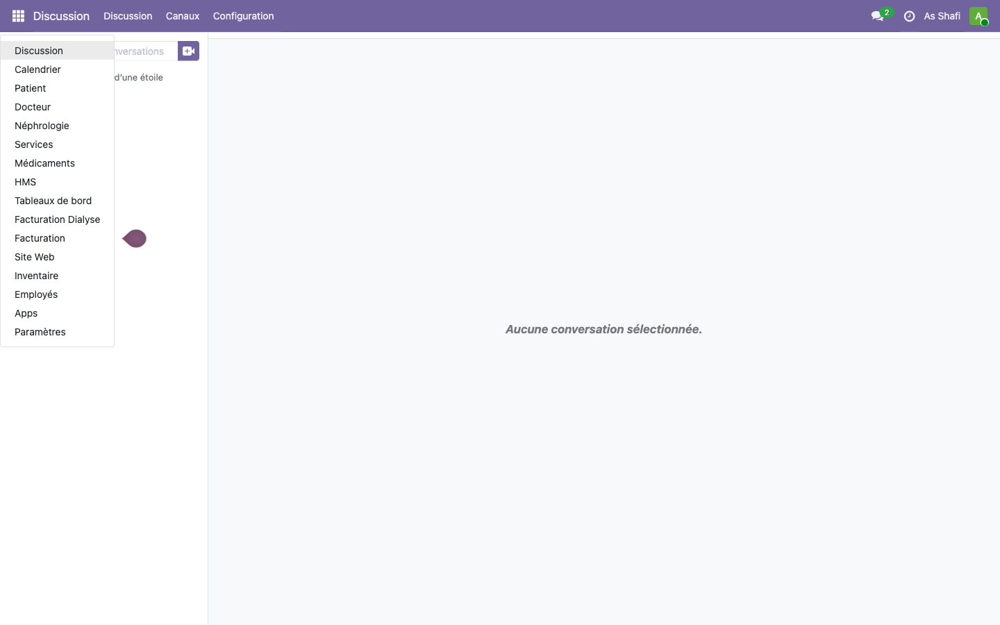
Accès à la liste des patients
Dans le menu principal d'Odoo, naviguer vers le module Patient pour accéder à la liste complète des patients néphrologiques enregistrés.
- 1Cliquer sur Patient dans la barre de menu supérieure
- 2Sélectionner Patient dans le sous-menu — la liste s'affiche
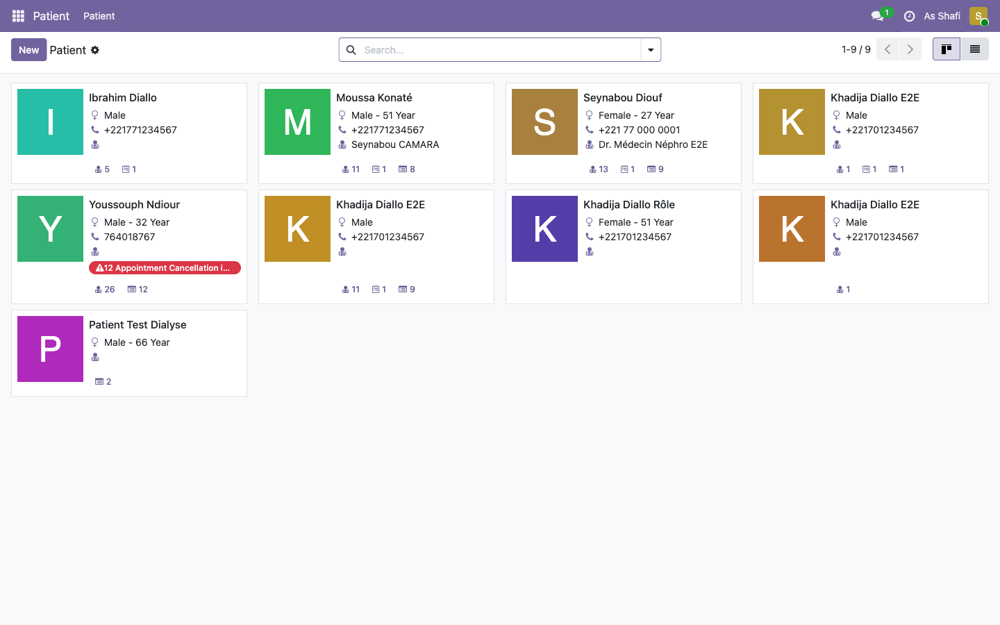
Créer un nouveau patient
Un formulaire vierge s'ouvre. La secrétaire saisit toutes les informations d'identité du patient : nom complet, date de naissance, genre, adresse, numéro de téléphone, contact d'urgence.
- 1Cliquer sur Nouveau — le formulaire vierge apparaît
- 2Remplir : Nom, Prénom, Date de naissance, Genre, Téléphone, Adresse
- 3Ajouter le contact d'urgence (nom + téléphone)
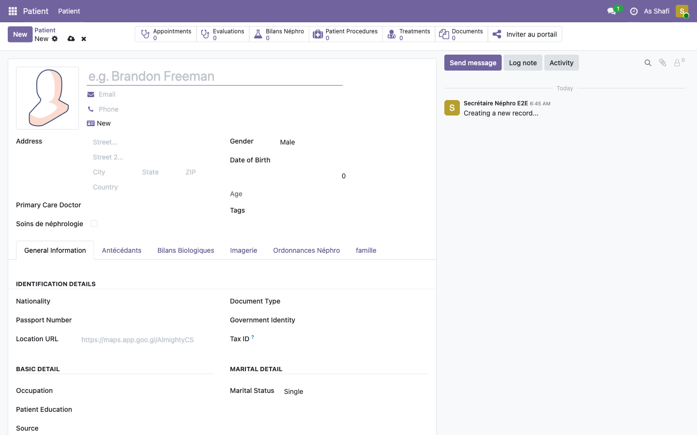
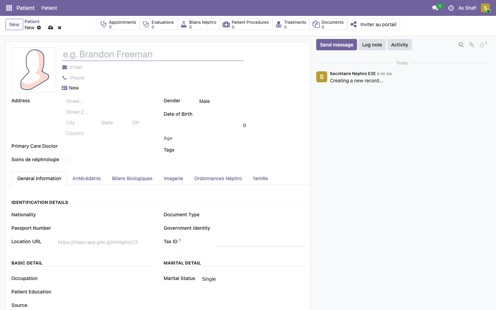
Activer les Soins Néphrologiques
En cochant la case Soins Néphrologiques, de nouveaux champs spécifiques à la dialyse apparaissent sur le formulaire : type de dialyse, groupe sanguin, allergies, antécédents néphrologiques, assureur.
- 1Cocher la case Soins Néphrologiques dans l'onglet Informations médicales
- 2Les champs spécifiques (type dialyse, groupe sanguin, assureur) apparaissent
- 3Remplir les informations néphrologiques disponibles
Sauvegarder — numéro HMS généré
À la sauvegarde, le système génère automatiquement un numéro HMS unique (ex: HMS/2026/0042) qui identifie le patient dans tout le système. Ce numéro ne peut pas être modifié.
- 1Cliquer sur Sauvegarder (ou Ctrl+S)
- 2Le numéro HMS est généré et affiché en haut du formulaire
- 3Le dossier passe en mode lecture — les modifications nécessitent Modifier

Vérifier le dossier patient complet
Le dossier patient final présente plusieurs onglets : Informations générales, Antécédents, Soins néphrologiques, Séances, Bilans, Documents. Vérifier que toutes les sections sont bien renseignées.

Points clés à retenir — Cycle 1
- La case "Soins Néphrologiques" est obligatoire pour que le patient soit visible dans les modules dialyse
- Le numéro HMS est généré automatiquement et devient l'identifiant unique du patient dans tout le système
- Le contact d'urgence est indispensable — le renseigner dès l'inscription
- Une fois inscrit, le dossier est immédiatement accessible au médecin pour la prescription
Cycle 2 — Prescription & Planification des Séances
Connexion médecin & accueil
Le médecin se connecte avec ses identifiants. Contrairement à l'infirmière, il accède au tableau de bord médecin général qui donne une vue d'ensemble sur tous ses patients en cours de dialyse.
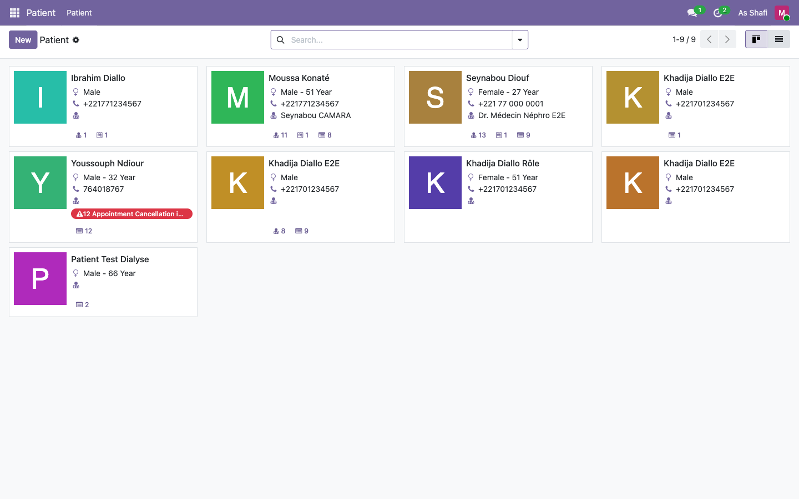

Ouvrir le dossier patient Amadou Bâ
Le médecin recherche le patient "Amadou Bâ" nouvellement inscrit et ouvre son dossier. Il voit les informations complètes saisies par la secrétaire ainsi que les champs médicaux vierges à remplir.
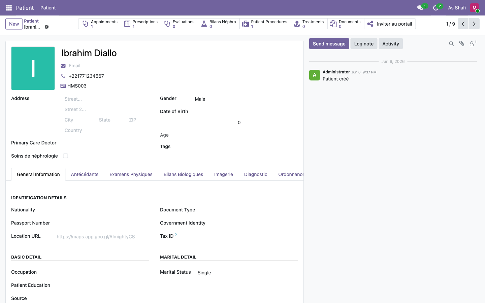
Créer la prescription hémodialyse
Le médecin crée la prescription de dialyse qui définit tous les paramètres techniques de chaque séance : durée, dialyseur, dialysat, débit sanguin, débit dialysat, ultrafiltration cible, planning hebdomadaire.
- 1Aller dans l'onglet Prescription du dossier
- 2Cliquer sur Nouvelle prescription
- 3Remplir : Durée (ex: 4h), Dialyseur, Dialysat, Débit sanguin, Planning (Lundi/Mercredi/Vendredi)
- 4Sauvegarder la prescription

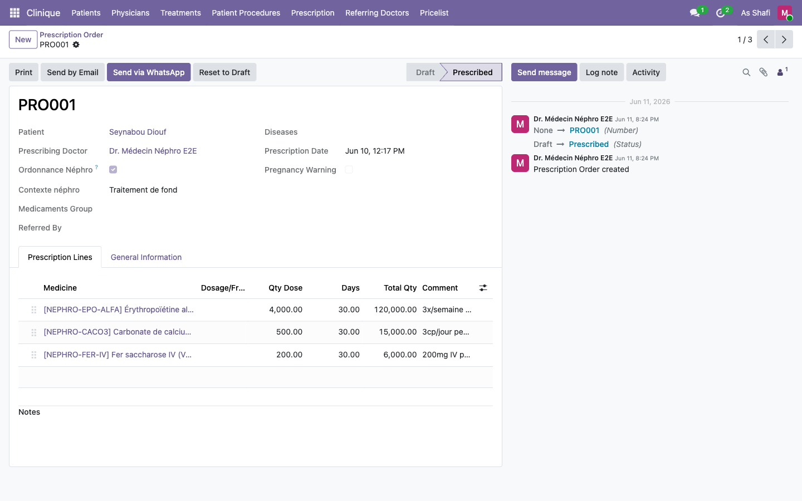
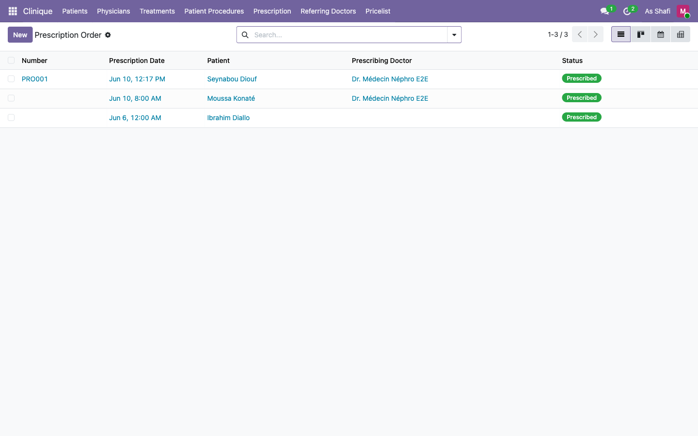
Générateur de séances
L'outil générateur de séances crée automatiquement toutes les séances à partir de la prescription sur une période donnée. Le médecin définit la période, prévisualise les créneaux, puis confirme la génération.
- 1Cliquer sur Générer les séances depuis la prescription
- 2Remplir la période : Date de début (ex: 01/07/2026), Date de fin (ex: 31/07/2026)
- 3Choisir le planning ou les jours de la semaine
- 4Cliquer Prévisualiser — la liste des créneaux proposés s'affiche
- 5Vérifier les dates (attention aux jours fériés) puis Confirmer
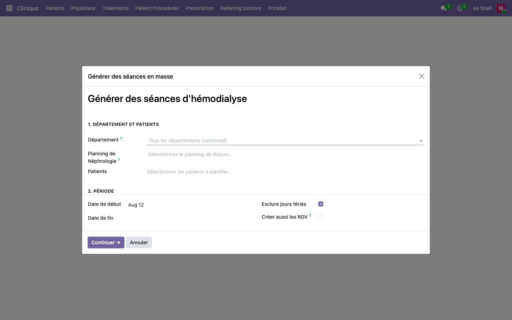


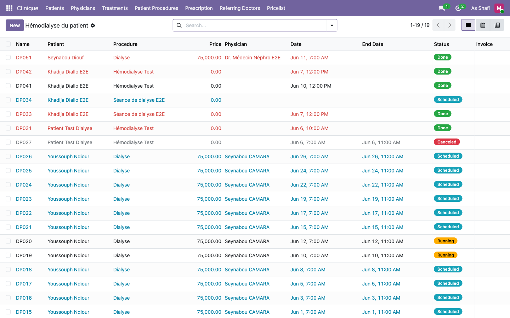
Créer le bilan biologique pré-dialyse
Avant le démarrage de la dialyse, le médecin saisit les valeurs biologiques de référence du patient : créatinine, urée, potassium, hémoglobine, phosphore. Les valeurs hors normes apparaissent en rouge ou orange.
- 1Aller dans l'onglet Biologie du dossier → cliquer Nouveau bilan
- 2Saisir les valeurs de chaque paramètre (créatinine, urée, Hb, K+, Ca²+, phosphore...)
- 3Le système affiche automatiquement les indicateurs couleur (vert=normal, orange=limite, rouge=anomalie)
- 4Sauvegarder le bilan

Créer l'ordonnance médicamenteuse
Le médecin rédige l'ordonnance des médicaments pris pendant ou entre les séances de dialyse. Cette ordonnance sera visible par le patient sur son portail et peut être téléchargée en PDF.


Points clés à retenir — Cycle 2
- La prescription définit les paramètres techniques de chaque séance — elle est la base du générateur
- Le générateur crée automatiquement toutes les séances du mois selon le planning L/M/V ou M/J/S
- Les séances générées sont en statut "Programmé" — elles passent à "En cours" quand l'infirmière les démarre
- Le bilan biologique pré-dialyse sert de référence pour détecter les anomalies au cours du suivi
Cycle 3 — Déroulement d'une Séance de Dialyse
Connexion infirmière — interface dédiée
L'infirmière se connecte et est automatiquement redirigée vers l'Interface Infirmier (action-588). Elle voit uniquement les patients des plannings auxquels elle est assignée, avec leur statut de séance du jour.
Démarrer la séance d'Amadou Bâ
L'infirmière trouve la carte du patient Amadou Bâ avec le statut "Programmé". Elle clique pour ouvrir la fiche de séance puis démarre officiellement la séance après avoir branché le patient.
- 1Trouver la carte d'Amadou Bâ (statut : Programmé)
- 2Cliquer sur la carte pour ouvrir la fiche de séance
- 3Cliquer sur Démarrer la séance
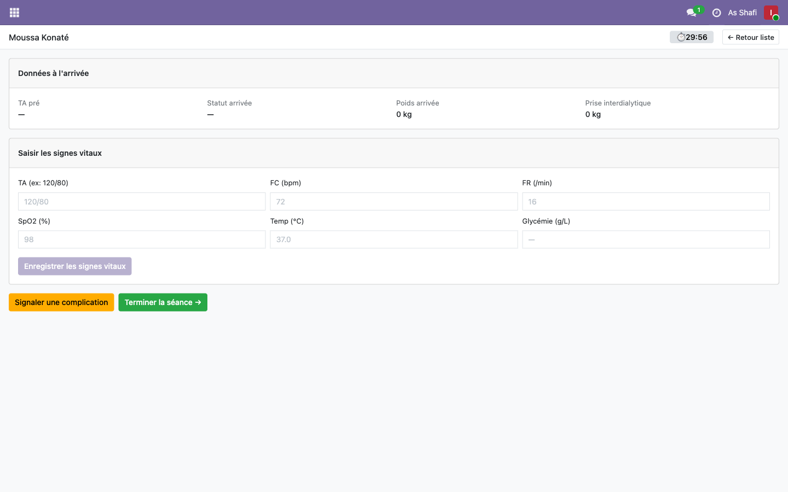
Saisir les paramètres vitaux initiaux
Avant de démarrer la pompe, l'infirmière mesure et enregistre les constantes initiales du patient. Ces valeurs serviront de référence pour détecter les complications pendant la séance.
- 1Saisir la TA pré-dialyse (Tension Artérielle, ex: 140/85 mmHg)
- 2Saisir le Poids pré-dialyse (ex: 72.5 kg)
- 3Saisir la Fréquence Cardiaque (ex: 78 bpm)
- 4Valider les constantes — la séance passe EN COURS

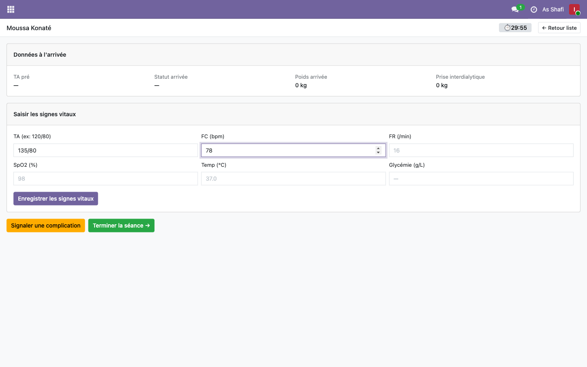
Surveillance médecin — dashboard temps réel
Le médecin surveille l'ensemble des séances en cours depuis son dashboard. Il peut basculer entre la vue grille (cartes) et la vue liste selon sa préférence. Les séances actives sont clairement distinguées.
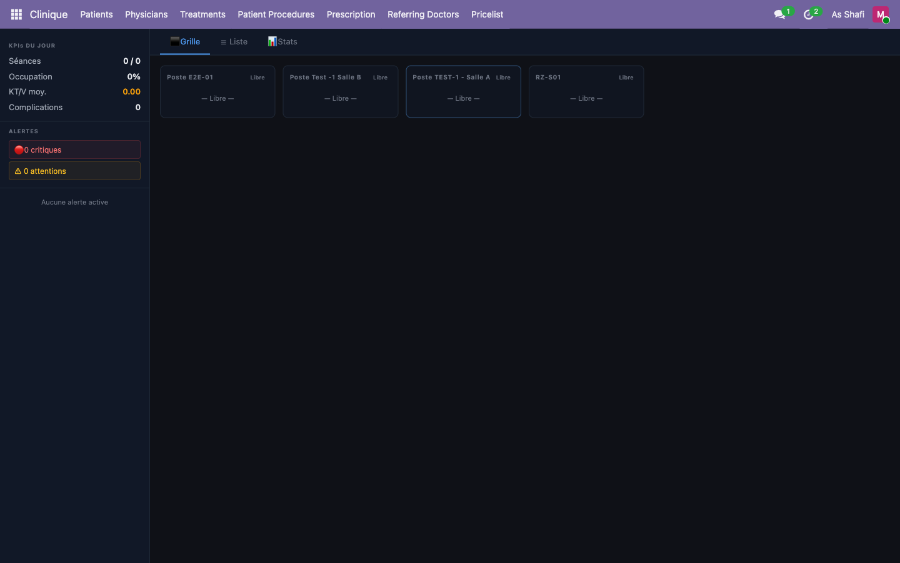
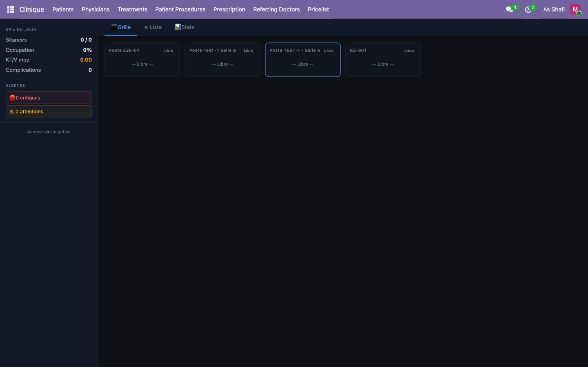
Signaler une complication
Si le patient présente une complication (hypotension, crampe, nausées...), l'infirmière la déclare immédiatement via le bouton dédié. Un formulaire popup s'ouvre pour documenter l'incident.
- 1Cliquer sur Signaler complication dans la fiche séance
- 2Choisir le type : Hypotension (ou crampe, nausée, frissons...)
- 3Saisir la TA au moment de la complication et l'action prise (sérum salé, position)
- 4Indiquer si la complication est résolue ou en cours
- 5Valider — l'alerte est envoyée au médecin
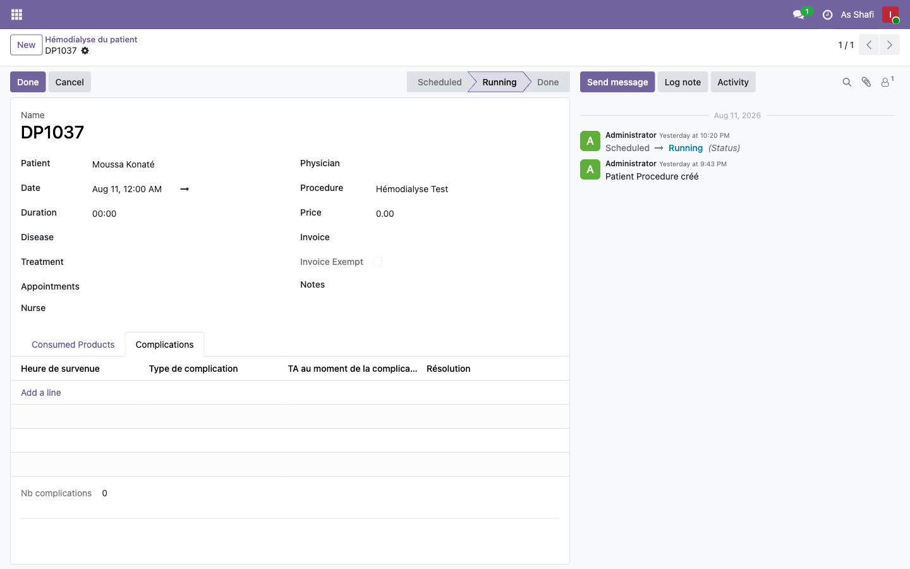
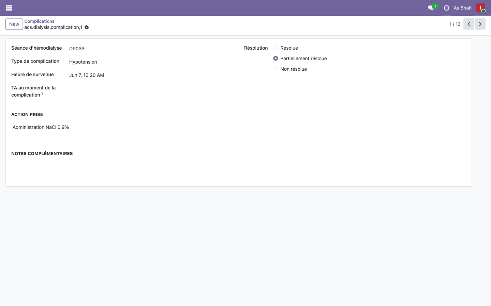
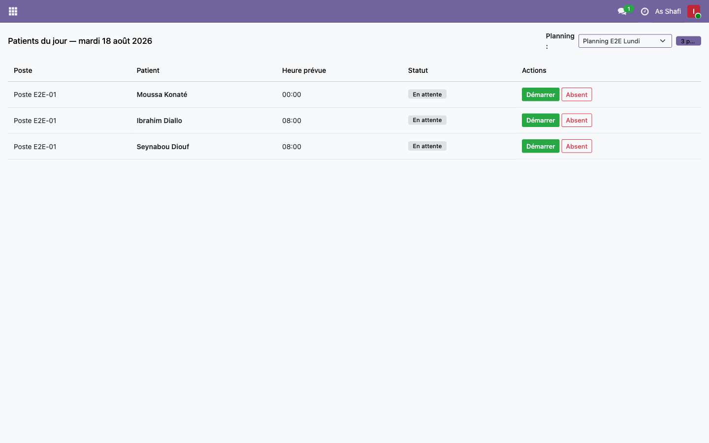
Médecin : réception et prise en charge de l'alerte
Le médecin voit immédiatement l'alerte rouge sur son dashboard. Il peut consulter le détail de la complication, l'action prise par l'infirmière, et ajouter une note clinique ou une modification de prescription.
- 1L'alerte rouge s'affiche sur la carte du patient dans le dashboard
- 2Cliquer sur l'alerte pour voir le détail de la complication
- 3Ajouter une note clinique : "Hypotension résolue. Réduire UF si récidive."
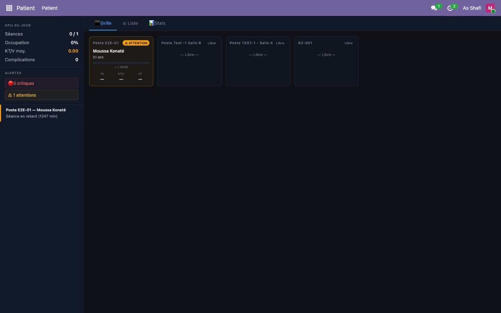
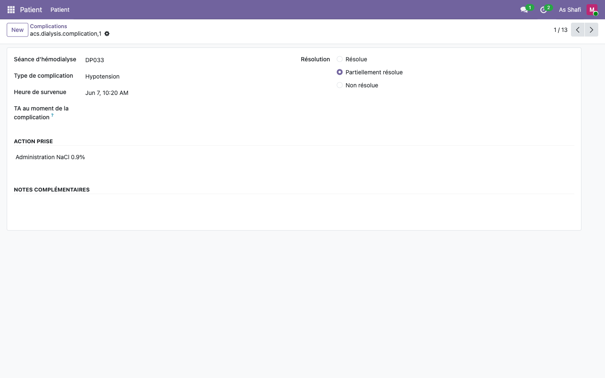
Fin de séance — paramètres post-dialyse
En fin de séance, l'infirmière débranche le patient et saisit les paramètres de clôture : TA post, poids post, volume d'ultrafiltration réel, tolérances. Le KT/V est calculé automatiquement.
- 1Cliquer sur Terminer la séance
- 2Saisir : TA post-dialyse, Poids post (ex: 70.2 kg), UF réelle retirée
- 3Le système calcule automatiquement le KT/V (indicateur d'efficacité)
- 4Confirmer la clôture — séance passe à Terminé


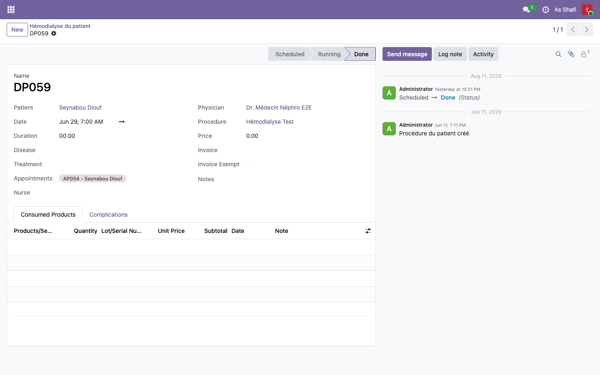
Points clés à retenir — Cycle 3
- La séance EN COURS est visible en temps réel sur le dashboard médecin dès son démarrage par l'infirmière
- Une complication déclarée génère une alerte immédiate sur le dashboard médecin — aucune action manuelle n'est nécessaire
- Le KT/V est calculé automatiquement à partir des poids pré/post et de l'UF — vérifier qu'il est supérieur à 1.2
- La séance doit être "Terminée" dans le système pour qu'elle soit prise en compte par la facturation
Cycle 4 — Suivi Biologique Mensuel
Médecin — saisir le bilan biologique post-dialyse
Chaque mois, le médecin saisit les résultats du bilan sanguin de fin de mois. Les indicateurs couleur permettent d'identifier immédiatement les valeurs anormales et de suivre l'évolution par rapport au mois précédent.
- 1Ouvrir le dossier du patient → onglet Biologie
- 2Cliquer Nouveau bilan → choisir "Bilan mensuel post-dialyse"
- 3Saisir les valeurs : Créatinine, Urée, Hémoglobine, Potassium, Phosphore, Albumine, Ferritine
- 4Le système affiche les flèches tendance (↑ hausse, ↓ baisse, = stable) vs le mois précédent
- 5Sauvegarder — le bilan est visible sur le portail patient dans les minutes suivantes
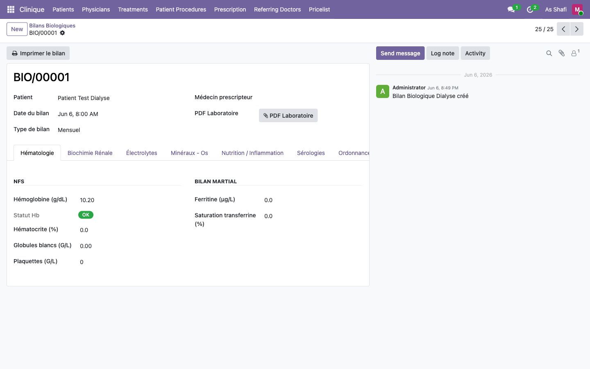
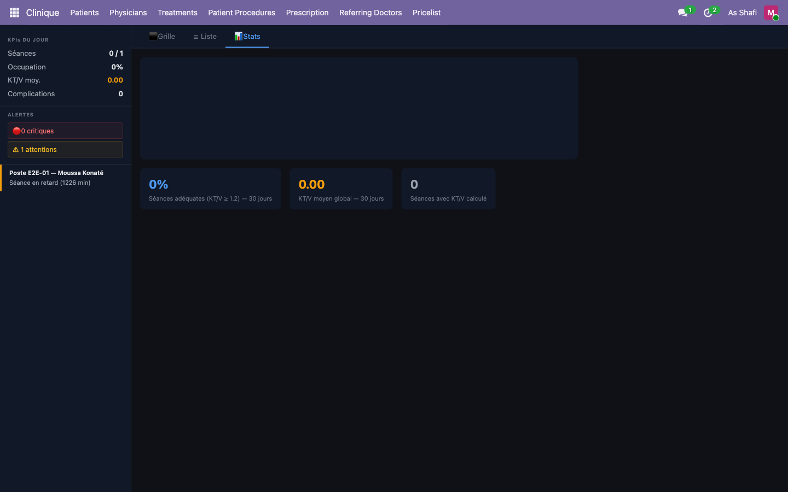
Patient — consulter ses bilans sur le portail
Le patient accède à ses résultats biologiques depuis son portail. Il voit les graphiques d'évolution sur plusieurs mois et le détail de chaque bilan avec les valeurs normales de référence pour comprendre ses résultats.
- 1Connexion sur le portail → menu Mes résultats biologiques
- 2Voir les graphiques d'évolution (créatinine, urée, hémoglobine sur 6 mois)
- 3Cliquer sur un bilan pour voir le détail avec les valeurs de référence
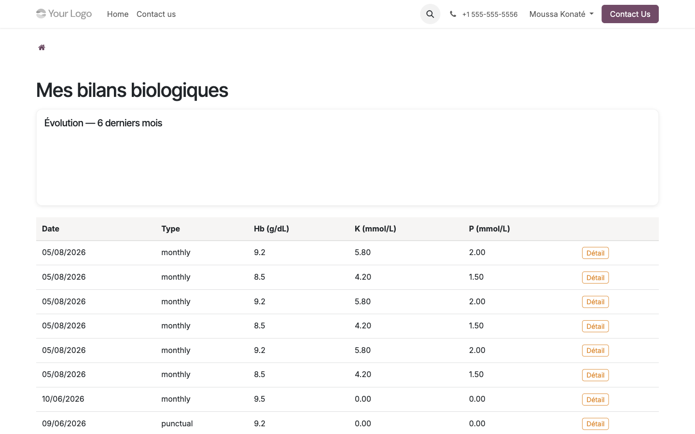
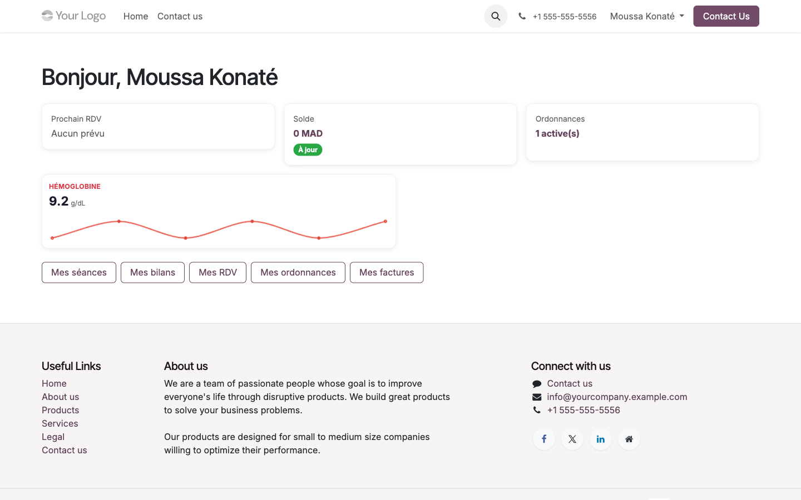
Points clés à retenir — Cycle 4
- Les bilans biologiques sont visibles par le patient sur son portail dès leur enregistrement par le médecin
- Les graphiques permettent au patient de suivre l'évolution de ses paramètres mois par mois
- Le KT/V mensuel (objectif > 1.2) est l'indicateur clé d'efficacité de la dialyse — il est calculé automatiquement
- Un bilan avec des valeurs anormales déclenche une alerte visible sur le dashboard médecin
Cycle 5 — Gestion d'une Absence Patient
Naviguer vers Absences Patients
La secrétaire accède à la gestion des absences via le menu dédié. La liste affiche toutes les absences déclarées (passées, en cours, à venir) avec leur statut (Brouillon ou Validé).
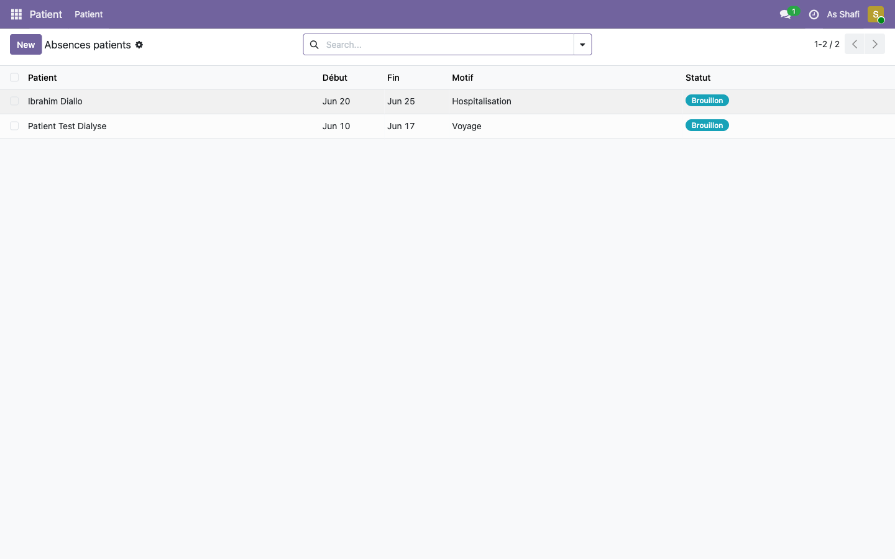
Créer une nouvelle absence
La secrétaire crée une absence pour un patient qui l'a informée (voyage, hospitalisation, refus temporaire). Elle remplit le formulaire avec le patient, les dates et le motif.
- 1Cliquer sur Nouveau dans la liste des absences
- 2Sélectionner le patient : Amadou Bâ
- 3Saisir la date de début et la date de fin de l'absence
- 4Choisir le motif (Voyage, Hospitalisation, Motif personnel, Refus...)
- 5Ajouter une note si nécessaire
Valider l'absence — blocage automatique des séances
En validant l'absence, le système bloque automatiquement toutes les séances planifiées pour le patient pendant la période d'absence. Ces séances passent au statut "Annulé" et sont visibles comme telles dans le planning médecin.
- 1Vérifier les dates et le motif
- 2Cliquer sur Valider — confirmation demandée
- 3Le système annule automatiquement les séances sur la période
- 4L'absence passe au statut Validé

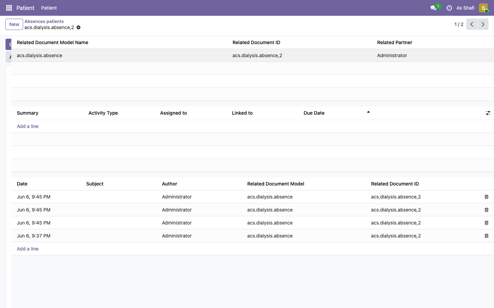
Points clés à retenir — Cycle 5
- Un brouillon d'absence ne bloque rien — seule la validation déclenche l'annulation automatique des séances
- La validation est définitive : pour annuler une absence validée, contacter l'administrateur
- Le médecin voit les séances annulées dans son dashboard avec un indicateur d'absence
- Les séances annulées pour absence ne sont pas facturées automatiquement
Cycle 6 — Facturation & Paiement
Connexion — application Facturation Dialyse
L'agent de facturation se connecte avec ses identifiants dédiés. Il accède directement à l'application Facturation Dialyse, qui affiche les séances terminées non encore facturées (la queue quotidienne).
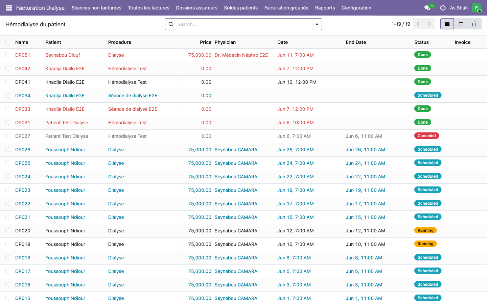
Vérifier le dossier assureur du patient
Avant de créer la facture, l'agent vérifie si le patient est assuré et les conditions de prise en charge. Pour Amadou Bâ, la couverture IPRES prend en charge 70% des frais de dialyse.
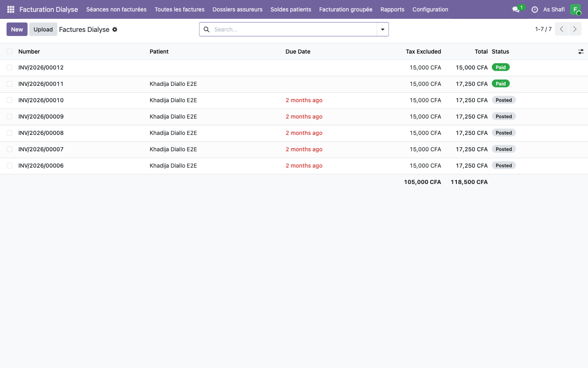

Créer la facture (brouillon)
L'agent sélectionne la séance terminée et crée la facture. Le système pré-remplit les lignes de facturation selon le tarif configuré (séance dialyse, consommables, médicaments administrés).
- 1Sélectionner la séance terminée d'Amadou Bâ dans la queue
- 2Cliquer sur Créer facture
- 3Vérifier les lignes pré-remplies (tarif séance, consommables)
- 4La facture est en statut Brouillon

Appliquer le split assureur / patient
Pour un patient assuré, le système peut diviser automatiquement la facture : la part assureur (IPRES 70%) est générée séparément de la part patient (30%). L'agent vérifie les montants calculés.
- 1Activer l'option Facturation avec assureur
- 2Sélectionner l'assureur : IPRES (70% prise en charge)
- 3Vérifier les montants : Part IPRES / Part patient
- 4Le système génère deux lignes distinctes dans la facture
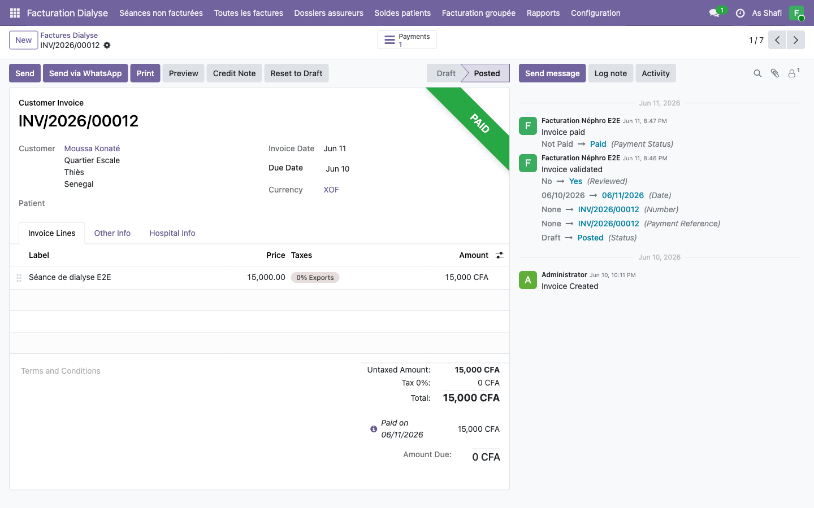
Confirmer la facture — statut Comptabilisé
La confirmation de la facture la rend officielle et non modifiable. Elle passe au statut "Comptabilisé" (ou Publié). Un numéro de facture définitif est attribué.

Enregistrer le paiement
Lorsque le patient règle sa part (espèces, Wave, Orange Money, carte), l'agent enregistre le paiement. La facture passe au statut PAYÉ et affiche une bannière verte de confirmation.
- 1Cliquer sur Enregistrer le paiement
- 2Sélectionner le mode de paiement (Espèces, Wave, Orange Money, CB)
- 3Saisir le montant et la date
- 4Valider — la facture passe à Payé
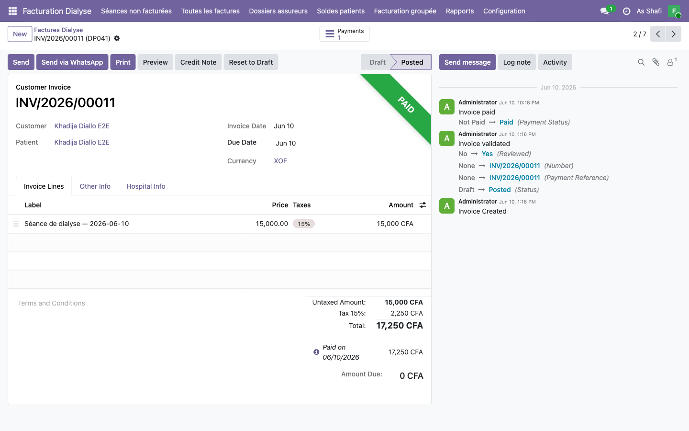
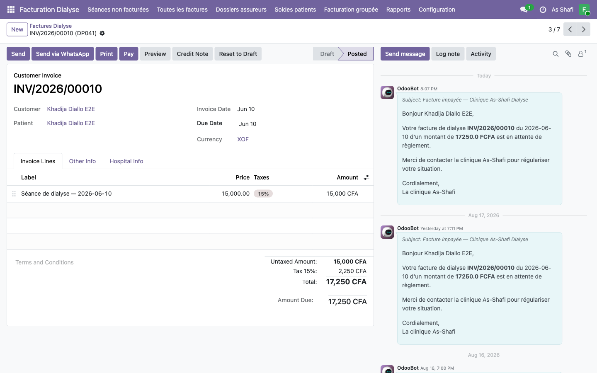
Soldes patients & rapport mensuel PDF
En fin de mois, l'agent génère le rapport mensuel en PDF et consulte les soldes patients pour identifier les impayés. Le rapport récapitule toutes les séances facturées, les montants assureurs et les encaissements.
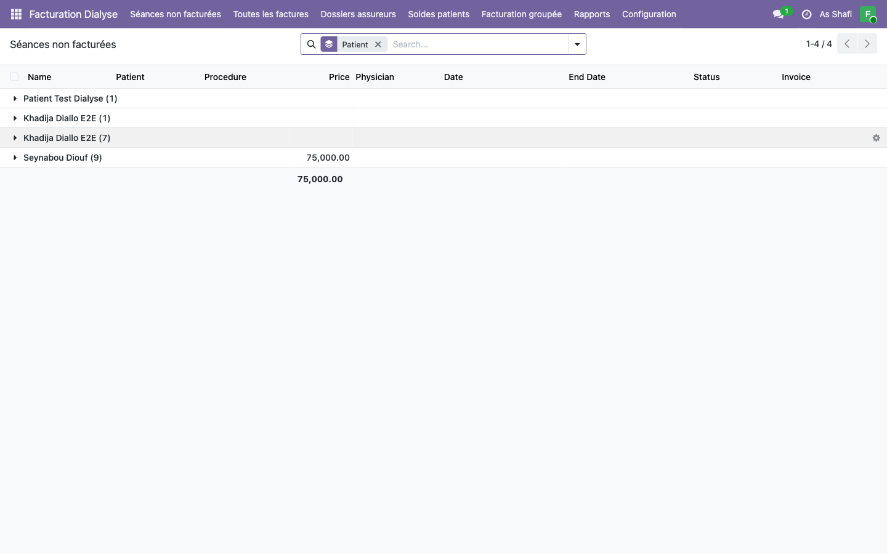
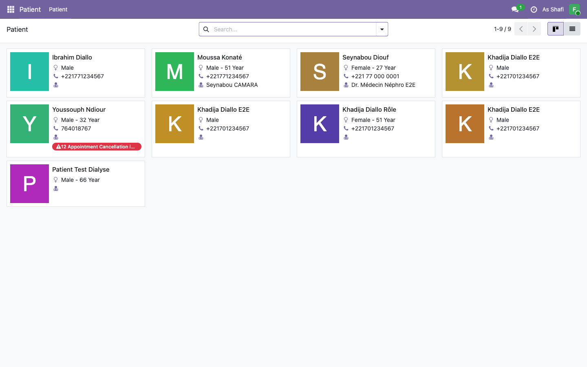
Points clés à retenir — Cycle 6
- Seules les séances au statut "Terminé" apparaissent dans la queue de facturation — vérifier avec l'infirmière si une séance est manquante
- Le split assureur/patient est automatique si l'assureur est configuré dans le dossier patient
- Une facture confirmée ne peut pas être modifiée — créer un avoir pour corriger une erreur
- Le rapport mensuel PDF doit être généré et archivé avant le 5 du mois suivant
Cycle 7 — Accès Portail Patient
Connexion portail — tableau de bord patient
Le patient se connecte avec ses identifiants portail (envoyés par email lors de la création de son compte). Il est automatiquement redirigé vers son espace personnel /my — il n'a pas accès aux menus Odoo internes.
- 1Aller sur
http://localhost:8069/web/login - 2Saisir l'email reçu et le mot de passe (lien de réinitialisation dans l'email de bienvenue)
- 3Redirection automatique vers
/my— le tableau de bord patient s'affiche
Mes séances de dialyse
Le patient consulte la liste complète de ses séances passées et à venir. Chaque séance affiche la date, le poste, la durée, le statut, et les paramètres clés (KT/V, UF retirée, tolérances).
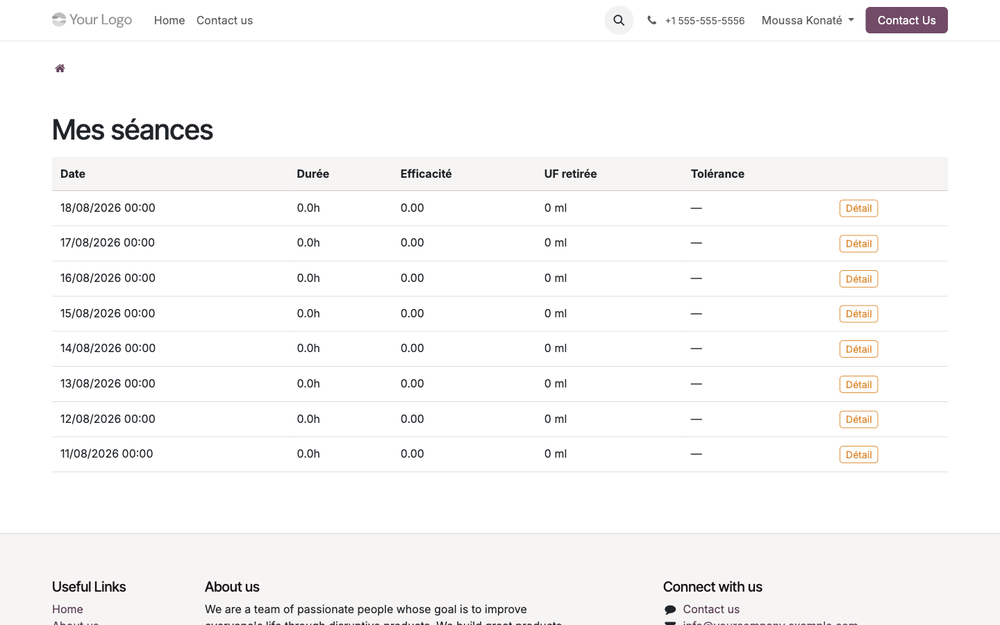
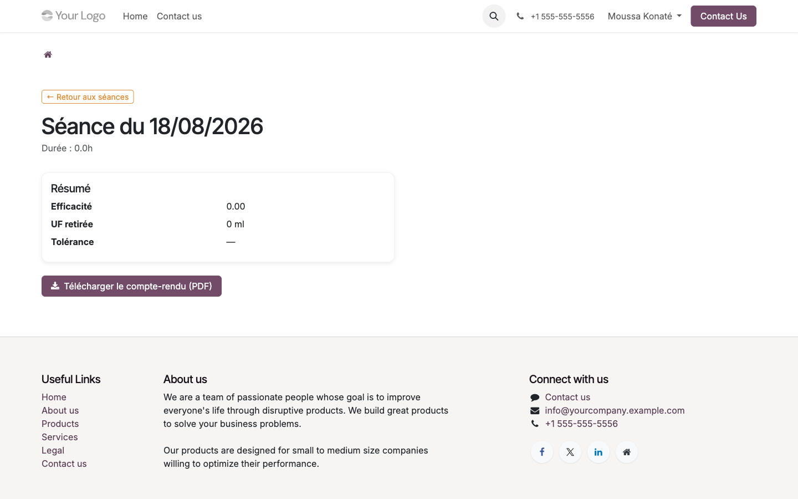
Mes résultats biologiques
Le patient accède à ses bilans biologiques avec des graphiques d'évolution faciles à lire. Chaque valeur est accompagnée des normes de référence pour permettre au patient de comprendre ses résultats sans jargon médical.
Mes rendez-vous
Le patient consulte son calendrier de rendez-vous médicaux (consultations néphrologue, contrôles, bilans prévus). Il peut voir les prochains créneaux et l'adresse du centre.
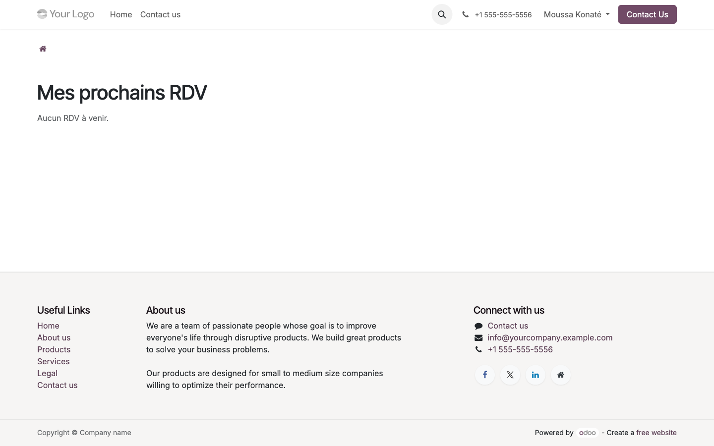
Mes ordonnances
Le patient voit ses ordonnances actives et peut télécharger chacune en format PDF pour la présenter à la pharmacie. Les ordonnances expirées restent consultables dans l'historique.
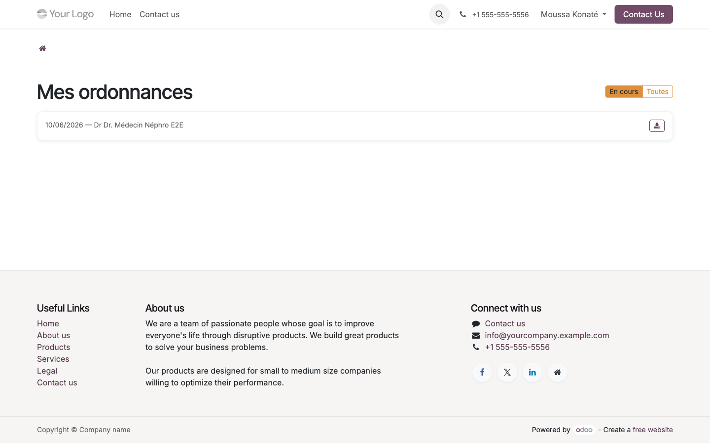
Mes factures
Le patient consulte ses factures de dialyse : celles déjà payées (avec le montant total, la part payée et la part assureur) et les éventuelles factures en attente de paiement. Le solde global est affiché en bas de page.
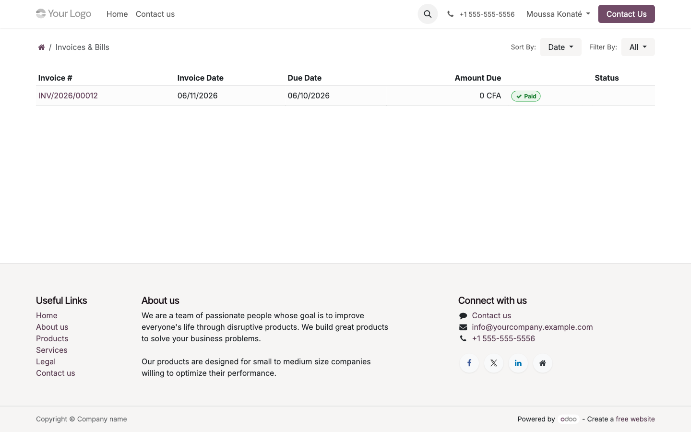
Points clés à retenir — Cycle 7
- Le portail est en lecture seule — le patient ne peut modifier aucune information
- Les identifiants portail sont différents des identifiants du système interne HMS — ils sont envoyés par email
- Les bilans et séances sont visibles dès leur enregistrement par l'équipe médicale
- En cas de problème de connexion, contacter la secrétaire pour réinitialiser le mot de passe portail